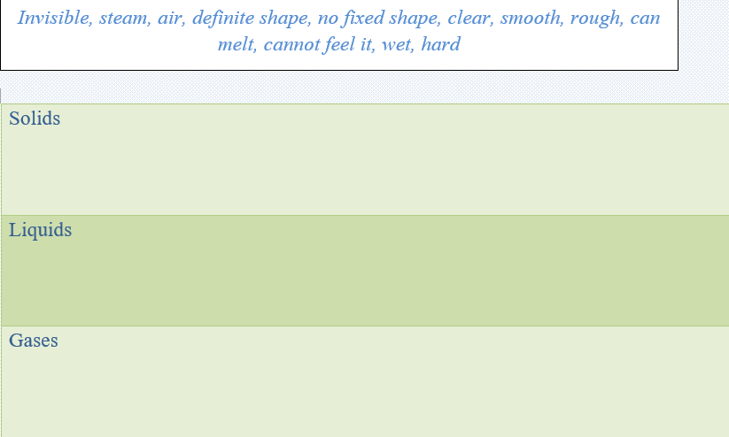
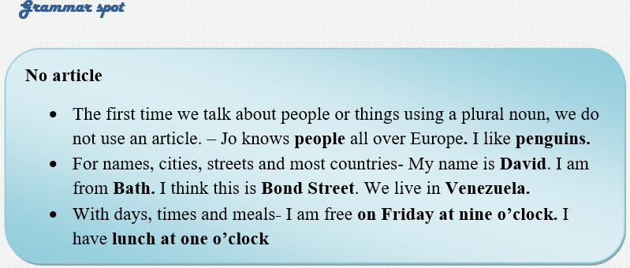
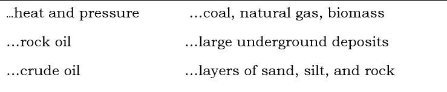
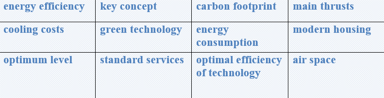

Natural gas is a fossil energy source that formed deep beneath the earth's surface. Natural gas contains many different compounds. The largest component of natural gas is methane, a compound with one carbon atom and four hydrogen atoms (CH4). Natural gas also contains smaller amounts of natural gas liquids (NGLs; which are also hydrocarbon gas liquids), and non-hydrocarbon gases, such as carbon dioxide and water vapor. We use natural gas as a fuel and to make materials and chemicals.
How did natural gas form?
Millions to hundreds of millions of years ago and over long periods of time, the remains of plants and animals (such as diatoms) built up in thick layers on the earth’s surface and ocean floors, sometimes mixed with sand, silt, and calcium carbonate. Over time, these layers were buried under sand, silt, and rock. Pressure and heat changed some of this carbon and hydrogen-rich material into coal, some into oil (petroleum), and some into natural gas.
What is liquefied natural gas?
Liquefied natural gas (LNG) is natural gas that has been cooled to a liquid state, at about -260° Fahrenheit, for shipping and storage. Natural gas liquefaction makes it possible to transport natural gas to places pipelines do not reach and to use natural gas as a transportation fuel.
Natural gas and the environment
Natural gas has many qualities that make it an efficient, relatively clean burning, and economical energy source. Natural gas is a relatively clean burning fossil fuel. Burning natural gas for energy results in fewer emissions of nearly all types of air pollutants and carbon dioxide (CO2) than burning coal or petroleum products to produce an equal amount of energy.

Task2 Reading
Read the text and answer the given questions.
🔸What is the largest component of natural gas?
🔸What are non-hydrocarbon gases?
🔸What changed carbon and hydrogen-rich material into coal, oil and
🔸natural gas?
🔸What makes it possible to transport natural gas to places?
🔸For what two purposes is natural gas cooled?
🔸Is natural gas a clean burning of fossil fuel?
Task3 Writing
Place the words in the correct rows.
Properties of solids, liquids and gasses


Task4Listening
Listen to the recording and write down the times.
1. Excuse me. Can you tell me the time, please?
Yes, it’s______________________
2. Do you have the right time, please?
I think it’s____________________
3. Do you know what time the next train to Leeds is, please?
Yes, it’s________________________
4. When do the banks open, please?
At _______________
5. What time does the film finish, please?
______________________________
6. When did they come?
At_______________________
7. What time do you finish your work today?
_________________________________
8. Do you know when the play finishes?
Yes, at exactly___________________
9. Excuse me, please. What time does the Glasgow train arrive?
_______________________________________________
10. When is the next flight to Paris?
_________________________
11. What time does the Oxford train arrive?
_______________________________
12. What’s the next train to Liverpool?
____________________________
13. What time does the London train arrive?
_______________________________
14. When does your mother come?
____________________________
15. When does the teacher come?
___________________________
Task 5Writing
✔️ Learn the given lexical units.
✔️ Work in groups and explain the meanings of the given lexical units.
✔️ Try to use them in sentences.

Read the case and give possible solutions
Energy efficiency is a key concept in today’s architecture with its friendly, low carbon footprint bias. One of the main thrusts of modern housing is to make it as energy-efficient as possible. An energy efficient home uses a minimum amount of energy. One of the largest contributors to energy consumption is heating costs during the cold months and cooling costs during the warmer months.
However, as the coin has two sides, there are also some challenges to achieve the optimum level. One challenge that you have with green technology is the available space. Air source heat pumps, for example, tend to be larger and require much more air space to operate correctly. This in turn can be a challenging issue for smaller buildings or buildings with limited space. As a result, the aesthetics of a building may be affected. Furthermore, green technologies require more maintenance than the standard services and that means people should be prepared to undertake this to ensure optimal efficiency of the technology.
Suggest some ways to achieve the optimal efficiency of the green technology and meet the standards of the housing for the green technology.
What is green technology?
What is the problem with green technology?
How serious is this situation?
What is the cause of this problem?
How it is successfully solved?
What is the most optimal solution?
Can present some tips on improving the situation?
Ortga